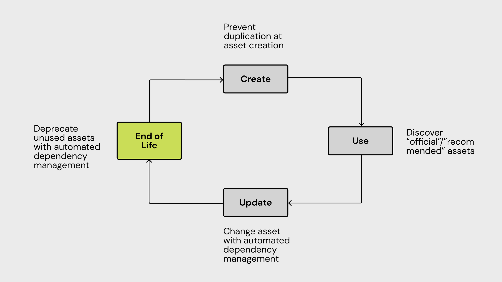
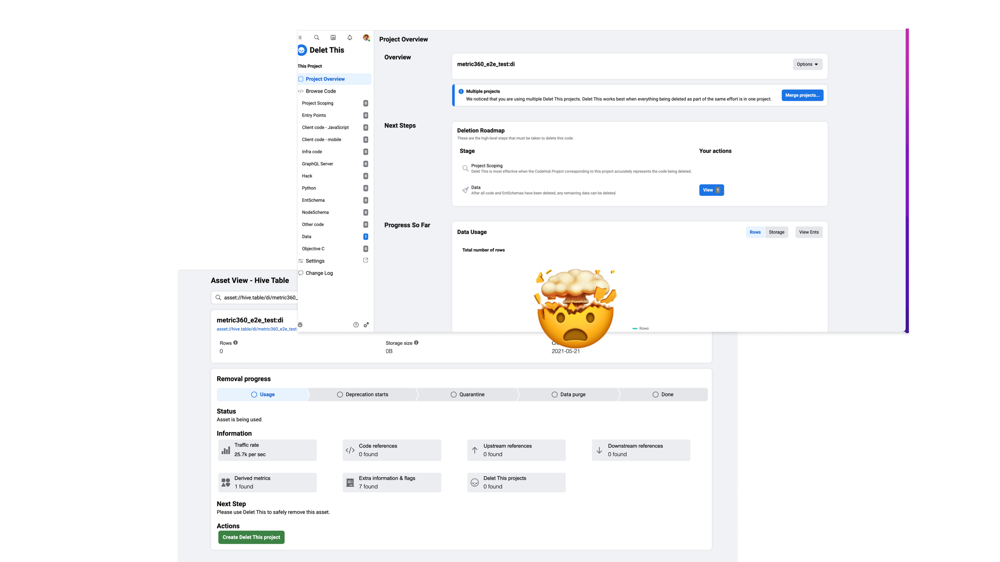

Data Lifecycle
Overview
Self-serve design to improve data artifact management across data tools at Meta.

Goals
Build a user-friendly self-service lifecycle management experience for all types of data assets. Create a simple flow that lets users easily deprecate tables and dashboards.
Target Audience
Our target users are internal employees who create and maintain data artifacts across teams at Meta. They are usually the following:
- Data Scientists: Create dashboards and data artifacts for specific purposes. Familiar with data tooling and SQL.
- Data Engineers: Support Data Scientists to make sure the pipelines are reliable and healthy. Familiar with data tooling, coding, and SQL.
- Project Managers and others: In some cases when there are no data scientists on the team, project managers, or program managers jump in to create dashboards. Not necessarily familiar with data toolings.
The design team is tasked with improving the data infrastructure organization's efficiency as Meta moves forward to be more privacy-aware and efficiency-driven. From analytics and qualitative research, we realized that internal employees are creating tons of data artifacts (tables, dashboards, pipelines, metrics, etc.) without maintaining and reusing the current ones. This leads to more and more data artifacts that do not comply with privacy review practices and inefficiencies in power and storage consumption.

The Four Phases
Based on foundational studies conducted by our user researchers on different data asset types, we generalized four different phases that a person goes through for the lifecycle of a data artifact. Let's take a dashboard as an example: Jon (Data Scientist) is responsible for this year's growth initiative for Instagram Reels.
Create: Jon puts together a dashboard from various metrics, tables with the help of the data engineering team. The dashboard contains their goal metrics, counter metrics, or any alternatives to measure their success.
Use: The Reels team reviews the dashboard weekly. In the case of spikes and drops happening, Jon investigates to figure out the potential reasons and reports findings to the team.
Update: Some tables get broken, Jon and the data engineering team either move the metrics to using other tables or fix the table.
End of life: After the initiative concludes, the team switches focus to other Reels initiatives, and Jon decides to deprecate the dashboard.
Problems
We categorized several major problems when managing the lifecycle of the data artifact. Current users usually use a coding tool for deletion. Communication is painful. People make posts on Workplace as the method for approval. No incentives for deprecation. Users would like to roll back if needed. Tools separation.
The team decided to focus on the end-of-life phase since several tools are already built. Also, the end of life has the most impact on the org for a limited timeframe. The team generalized a workflow to help users with deprecating a data artifact.

Design Directions
I explored four different design directions for End of Life, please view it on the desktop for the optimal experience!
- Deprecation Flow: Users get notified when the system detects artifacts to deprecate. Users are able to whitelist certain data artifacts, determine alternatives and message downstream and upstream users automatically to gather feedback.
- Deprecation Dashboard: Users get summarized impact on the data tools they are using (directory, dashboards…etc). Users are able to search for deprecating artifacts.
- Centralized Deprecation Tool: Users can search for different data assets, see detailed information on metadata, current progress and lineage to see if other people are still depending on their created assets.
- View Deprecated Assets: Consistent viewing experience on different data toolings. Users can request to unarchive, view alternative asset (Set by owner) or view historical data.
The team was able to get three different teams to onboard with our design. We have helped deprecate more than 30% of unused tables, 20% of dashboards. We also launched a MVP to recommend to users what metrics to use instead of creating one.
A separate workstream has been created to tackle the lineage problem.